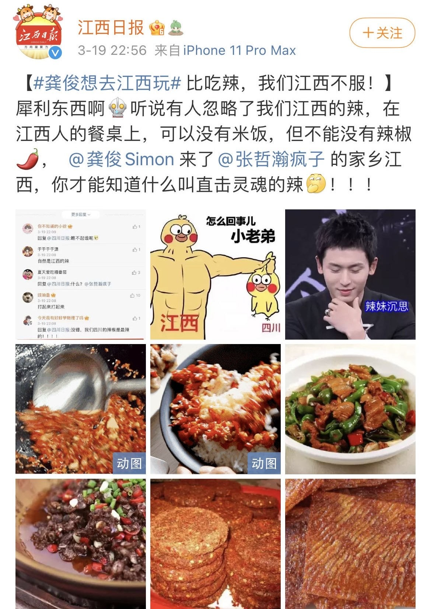
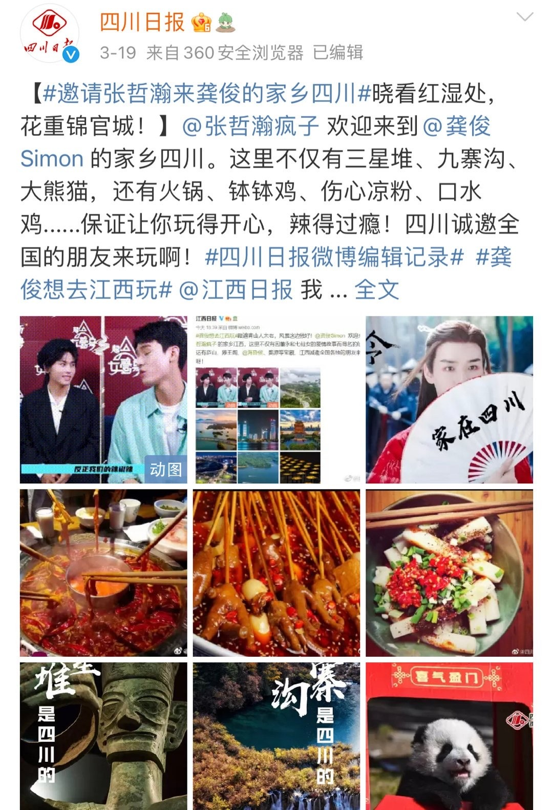
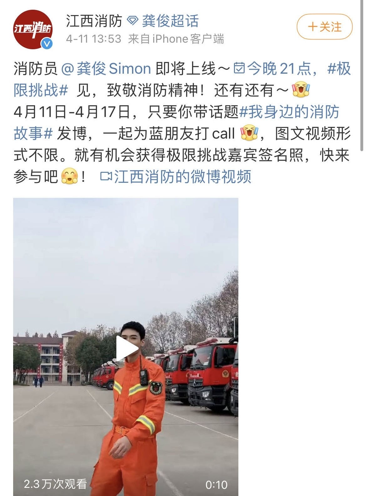
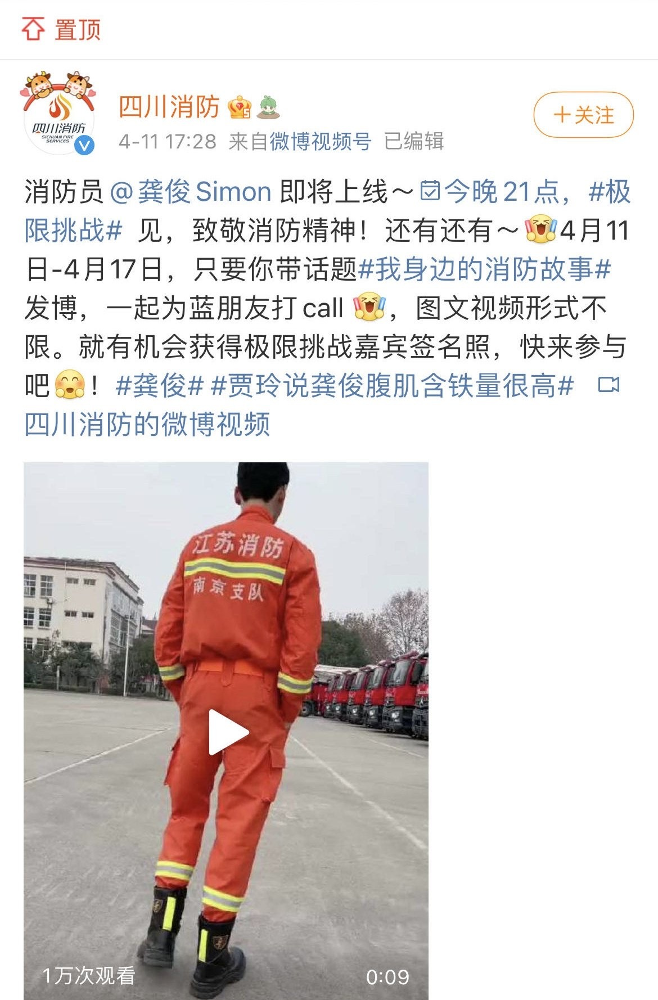

In early 2021, the first major danmei adaptation from a major studio aired in China. It was not a highly anticipated show; the two leads were not thought to have much chemistry, unlike stars of pervious danmei adaptations did such as Xiao Zhan and
Wang Yibo; they were not particularly famous, such as Luo Yunxi and Chen Feiyu, set to star in the upcoming danmei drama Immortality; it did not have a big budget, rumoured to be less than a quarter than that of Sha Po Lang. However, against all
odds, the show became the top-trending drama in China, the main stars were propelled to fame, and the budget concerns were soon proven to be unfounded with careful use of their limited funds making the show enjoyable. However, even with a passionate
cast and crew, the show would not have become the international success it did without a core of dedicated fans that “climbed the mountain” and ensured the show reached a larger audience than the creators ever would have thought possible until it was ultimately removed from domestic platforms in August 2021.
This project aims to answer the question of how the Chinese web-drama Word of Honor circumnavigated censorship and built a loyal fanbase that helped propel the show to international success, and what impact could this kind of participatory culture
have on Chinese popular culture in the future?
What is danmei?
Danmei is the literature, television, and fan transmedia phenomenon that focuses on male same-sex romantic pairings in Chinese spaces, equivalent to the Japanese term yaoi or BL. The term itself is borrowed
from the Japanese term tanbi, now fallen out of use, and directly translates to “indulging beauty”
Danmei in China has a shorter history than overseas, having arrived in mainland China from Japan via Taiwan in the early 1990’s as part of the doujinshi fanculture that arose around the same time (Feng 4). Since its emergence in China, it has
been the target of censorship and crackdowns for its explicit nature and content focusing on same-sex relationships, even though queerness and queer relationships have been featured in Chinese history and literature for millennia.
Danmei literature featured on popular webnovel site, Jinjiang Literature City has been recently adapted into popular web-based dramas, such as Guardian in 2018, The Untamed in 2019, Sleuth of the Ming Dynasty in 2020 and Word of Honor in 2021. Adaptations of other works, such as The Dumb Husky and His White Cat Shizun,
Silent Reading, Heaven Official’s Blessing, Sha Po Lang and Saye are either currently in production (as of October 2021)
or waiting to air, with numerous others in the pipeline, showing production companies in China are very aware of the potential lucrative market that an existing fanbase offers.
Timeline of danmei adaptations
上瘾
2016 - Addicted Heroin
One of the earlier forays into BL themed content for web dramas, this show was a hit amongst female audiences with the production team claiming the show was streamed over 10 million times the day after its premiere. It was pulled from the air
after 15 episodes (Ellis-Petersen).
盛势
Advance Bravely - 2017
This show had to operate under tightened censorship laws introduced after Addicted was pulled, and so the two main characters do not kiss. Nevertheless, the show was still deemed to contravene the new laws and it was pulled after it finished
airing. Second lead Gong Jun would go on to star in Word of Honor in 2021.
镇魂
2018 - Guardian
Based on a webnovel from Jinjiang Literature City by popular and prolific author Priest. The show had an extremely limited budget and hopes were not set that high for the show to be successful. However, it became a massive hit domestically,
with over 100 million views in two days (Ng and Li 480), and it propelled the two stars (Bai Yu and Zhu Yilong) to fame.
陈情令
The Untamed - 2019
Drama based on the popular webnovel Mo Dao Zu Shi by Mo Xiang Tong Xiu and a phenomenal hit, both domestically and overseas, garnering 7 billion views by the end of 2019, translated
into 11 different languages and distributed across multiple platforms, including WeTV/Tencent, YouTube and Netflix (Wang). Both stars, Xiao Zhan and Wang Yibo also became famous overnight with
scores of endorsements and television appearances. A fan-organised concert in Thailand attracted 9,000 fans, and a final farewell concert in Nanjiang sold out in under 5 seconds (Sina Entertainment).
成化十四年
2020 - Sleuth of the Ming Dynasty
A BL drama also based on a novel from Jinjiang Literature City, this time by Meng Xi Shi, that was not as wildly successful as its predecessors. The romance of the plot is played down in favour of the murder cases and
political intrigue, but nevertheless still portrays the close bond between the two leads.
云芊传
Legend of Yun Qian - 2020
A mini-series that would more accurately be classified as baihe (also an adapted term from Japan’s yuri) this short series is an example of the market dipping its toe into female queer romance, with the
series gaining over 300,000 views on YouTube.
山河令
2021 - Word of Honor
Also based on a danmei novel by Priest, this series was voted the least-anticipated danmei web-drama going into 2021. However, the strong script, chemistry between the main leads and clever investment in the limited budget meant that the show
became a huge success both domestically and internationally. This also led to a celebratory concert, held over two days, of which all tickets sold out in 40 seconds with 600,000 people competing for a seat (Yang).
双镜
Couple of Mirrors - 2021
Another example of the market exploring baihe stories, this Republican-era drama has attracted over 3 million views on YouTube since it finished airing in September 2021.
Word of Honor
Like the adaptation Guardian before it, Word of Honor was not officially a same-sex romance, however nearly all fans of the show were aware of its origins going into the drama and most who were not quickly picked up on the subtext being shown. Guardian
was described as “a case of a strongly homosocial narrative where the main relationship was only subtextually romantic, even as fans were aware of the source material being explicit about the […] romance” (Ng and Li 484) and Word of Honor fit this
description as well; the relationship between lead characters Zhou Zishu (played by Zhang Zhehan) and Wen Kexing (played by Gong Jun) was played out in a way that made the romantic plot between them obvious to anyone who was looking for it.
However, Word of Honor, like nearly all media in China, was subject to a certain level of censorship, supervised by the National Radio and Television Administration (NRTA). The NRTA’s mandate is to “implement the CPC’s propagandist strategies […], supervise and examine the quality of programs on radio, television, and the internet” (Clarification of the Reformation, 2018, quoted in (Ng and Li 481)). Series on television and web streaming platforms are
scrutinised according to both their platform and the level of promotion and marketing the production team expect to do. However, the presence of a censorship board does not mean there is a complete lack of expression, and many series have successfully
managed to navigate the complicated – and at times highly unclear – regulations in order to tell the stories they wish to.
Censorship of LGBTQ+ content in China has been a near-constant and ever-changing landscape, even though homosexuality was de-criminalised in 1997 and removed from the Chinese Society of Psychiatry’s list of mental illnesses in 2001. Production of
danmei adaptations must navigate the murky waters of queer censorship without a guidemap; a ban in 2018 of LGBTQ+ posts on Sina Weibo was reversed only a few days after it was implemented, and the NRTA’s implementations of its own policies have
been “unclear and complicated” with a lack of explicit criteria encouraging productions to self-censor (Zhou), showing an unclear mandate and confusion between sources. This means that many productions, fearing being rejected for an airing licence,
instead try not to push the boundaries and “play it safe” instead in order to guarantee a return on their investment.
With this in mind, in contrast with many recent predecessors – such as Guardian and The Untamed – Word of Honor quickly became notorious for its many inventive ways of circumventing the censorship of the genre, including changing lines in post-production,
making allusions to romantic poems without using overt romantic language, and visual cues to queer history.
Eagle-eyed viewers who could lip-read were able to spot post-production changes to the script, where the lines spoken by the actors on set were not the same as the ones later dubbed by the voice actors for those parts.
Some examples include;
Dubbed line:
里面一定藏着个好大好大的惊喜
(When I take down this mask of yours), inside of it, there must be a hidden, huge surprise
Original line:
里面一定是一副罕见的美人胚子
(When I take down this mask of yours), inside it must be a very rare beautiful person
Dubbed line:
只不过嘛啊絮你武功这么高五音却不全。有空我再教教你
But the thing is A’Xu, your martial arts skills are impeccable, but you don’t have an ear for music. When I get a moment, I’ll teach you.
Original line:
只不过嘛啊絮你人长得俊箫却吹得不怎么样。有空我再教教你
But the thing is A’Xu, you’re good looking, but you’re not very good at blowing the flute. When I get a moment, I’ll teach you.
Dubbed line:
周子舒莫不是给他下了药吧
Could it be that Zhou Zishu drugged him?
Original line:
那姓周的莫不是个狐狸精吧
That guy Zhou, could it be that he is a fox demon?
(This phrase alludes to the mythical creature hulijing that can turn into a beautiful woman to seduce young men and eat their life essence. Gu Xiang thinks that Zhou Zishu has seduced her master, Wen Kexing.)
The changed lines submitted for approval may not have clued the censors into the nature of the original lines, but as soon as fans noticed and shared their findings on social media, the wider fanbase was aware of the creators’ original intent, soon
backed up by behind the scenes footage of deleted and changed scenes, improvisation by the actors in order to make a scene more intimate and, crucially, the original lines as said by the actors on set.
Alongside these changed lines are references to classical romantic poetry that Wen Kexing uses both to show off his education and as a way of expressing his romantic interest in Zhou Zishu. In one example, he quotes a famous poem from the Jin era
used in many dramas and stories before, such as Legend of the Condor Heroes, that describes a swan, mated for life, that loses its lover;
千山暮雪
(我)孤翼只影向谁去(啊)
Thousands of mountains, evening snow
The lonely shadow, where should it fly to?
Another example is Wen Kexing adapting a romantic poem by Song Dynasty poet Li Zhiyi about the women he loves, separated from him at the other end of a long river;
幸得君心似我心
Fortunately, your heart is like my heart.
The original line reads instead as
只愿君心似我心
I only wish your heart is like my heart
The production also made a number of references and double-entendres intended to speak to the audience that would understand the references while flying over the heads of those that didn’t know (and possibly over the censors as well). A key example
is in two episodes (Episode 5 and Episode 18) where one character slices the sleeve of the other; Wen Kexing cuts Zhou Zishu’s sleeve in Episode 5 to remove a splatter of blood and Zhou Zishu cuts off a part of Wen Kexing’s sleeve that has caught
on fire in Episode 18.
Both of these actions likely allude to the story of the Emperor Ai Di who cut the sleeve of his robe rather than wake his male lover who was sleeping on it when he had to leave the bed.
The production teams’ willingness to lean into the genre of danmei and not shy away from showing the deep, soft affection, vulnerability, and love between the characters earned them a quick and loyal fanbase, with the show quickly going from the
least anticipated adaptation of 2021 to one with a huge national and international fanbase, a farewell concert across two days with 80,000 fans present, and TV and streaming licences across the world.
Fan Culture
The fandom of danmei transmedia has been steadily growing since the genre as is it today arrived in China in the 1990s, but has been greatly facilitated by social media and online communities such as Weibo,
Lofter, Douban, and Bilibili (Ng and Li 484). In very recent years, the interactions on social media between official sources and fans enter
into what Henry Jenkins would describe as “convergence culture”, as the success of media becomes more and more reliant on consumer’s active participation (Jenkins 3).
Online participatory culture
Using a character from the show’s title and the setting of the show’s final episode, Word of Honor fans dubbed themselves shanren (lit. mountain people) and talked about having “climbed the mountain” and now couldn’t seem to find the path down,
alluding to how addictive the show was and how fun they found the community. English fandom adopted the term as well and added their own language to the participatory culture in their interactions as well. Twitter users interacting with the production company Youku's official
account in English would use “bestie” as a term of endearment, reciprocated by the social media team at Youku, further breaking down the barrier between the official production team and the fans consuming the media.
Likewise, on Weibo, the newspapers for the home towns of the two stars joined in the fan participation with Sichuan News (hometown of Gong Jun) tagging Zhang Zhehan and Jiangxi News (hometown of Zhang Zhehan) tagging Gong Jun, each inviting them to
visit their co-star’s hometown. Their respective hometowns participated again after the airing of Word of Honor, with the firefighter units of both Sichuan and Jiangxi promoting Gong Jun’s then-upcoming firefighter drama The Flaming Heart
even though Zhang Zhehan had nothing to do with the show, other than his connection to Gong Jun. These particular examples of participatory culture, at opposition with traditional notions of passive media consumption, was highly unusual; not only
because of its somewhat unprecedented nature, but because it suddenly blurred the lines between who was official media and who was a fan.
 
 
Fan interaction with official accounts led to a special inclusion for the second day of the Word of Honor concert, where fans from across the world expressed their love for the show and the cast in front of the crowd and the assembled actors and actresses,
expressed by one international fan as having “made [her] entire decades [sic]”.
bestie thank you so much for including me!!! 👉👈 THIS MADE MY ENTIRE DECADES
Finally, the lead actors themselves were very much aware of the massive leap in their fanbases and what they owed to those fans for the success of the show. Their heartfelt thanks at the end of the Word of Honor concert showed how much they appreciated
and were humbled by the support they received, and showed how much the fans meant to them both.
Fans under censorship
Fans of Word of Honor are highly aware of the sensitive nature of danmei adaptations in the Chinese entertainment sphere and therefore tried to be circumspect in their interactions and discourse on social media. The term zhiji – used in the show
by the two main characters to describe their own relationship – has the benefit of not having romantic connotations by default, and yet still describes an intimate relationship, and so could freely be used by fans without fear of approbation. Like
Guardian, the fans were able to appease the state’s disapproval of overt expressions of homosexuality, while still being able to appreciate the inherent queerness of the show without being “completely confined to underground spaces”.
An example of the fans self-censorship came when actress Chen Zihan (who played the Tragicomic Ghost in Word of Honor) uploaded a fan-made video to weibo that saw her character overseeing a wedding of the main characters. The video quickly
went viral, trending at #1 on the Weibo Hot Search and was swiftly deleted. Fans began to flood the Hot Search tag with images of a heterosexual couple from the show, as well as the child disciple of Zhou Zishu, claiming him to be the main character
instead, in order to divert attention from the same-sex relationship of the actual main characters (Anonymous). This “damage control” is an example of fans “helping to sustain the series in context of significant state censorship” (Ng and Li 488)
by way of upholding that censorship themselves.
Danmei as praxis
As danmei transmedia becomes more popular and acknowledged by mainstream popular culture, it raises the question of whether or not appreciation of danmei and BL content leads to any kind of change in the attitude of the fans towards real life LGBTQ+
issues or society in general towards such issues. It is unclear if danmei as praxis for LGBTQ+ activism is in any way effective or impactful, and many Japanese fans have been criticised in the past for an apolitical approach to yaoi, saying that
“real gay people and yaoi have nothing to do with each other” (Ishida 2007, 116 quoted in (Hori [12])). Jin Feng notes that danmei operates in a different sphere to queer literature in that the participants “claim they produce and consume it for
reasons other than the representation of their true sexual identity or orientation” (Feng 5).
However, it would be unfair to dismiss fans of danmei and the adjacent genres as simply passively consuming the media. Feng notes that in their interviews, danmei readers included both men and women and some of them identified as members of the LGBTQ+
community (Feng 6) showing that a dismissal of danmei fans as solely comprising of cishet women is not an accurate reading of the fandom anymore, if it ever was to begin with.
In addition to queer participation in the genre, Ng and Li discuss the notion of “sexuality as individualism” in defiance of the ideology promoted by Xi Jinping and the Chinese Communist Party of progressing society as a collective. If sexual expression
is classified as a personal motivation, then it “may be seen as suspect for involving pursuits of pleasure not in support of the traditional family unit or sufficiently in service of societal and national-level goals” (Ng and Li 483). Therefore
the exploration by (mostly) women of a transmedia genre that defies heteronormative relationships can be seen as “evidence of a boarder and at least potentially unruly sexual agency” (Ng and Li 483). Thus, even if danmei cannot be seen as praxis
for LGBTQ+ activism, it certainly fits the criteria for a counter-culture or counter-subculture.
Soft power and cultural export under censorship
Soft power in Asia is becoming an increasing phenomenon, with Asia being described as having “impressive potential resources for soft power” with its influence on the rest of the world in the form of art, fashion and cuisine spanning centuries (Nye).
However, although China has the opportunity to utilise danmei adaptations as a form of soft power, they are severely limited by the censorship imposed on the productions. Recent laments on Weibo over a lack of a phenomenon such as South Korea’s Squid
Game in China (Wong) show that audiences are hungry for shows with moral ambiguity, experimental themes and a more diverse cast than simply idol actors and actresses. However, censorship severely limits the creativity of production teams, and Word
of Honor scriptwriter Xiao Chu was forced to change major plot points from the latter half of the novel in order to make both Wen Kexing and Zhou Zishu redeemable for the myriad of crimes they had committed, in order to fit in with censorship laws
regarding grey morality.
With new regulations in place post-August 2021, it will be difficult for China to use dramas in general – but certainly danmei adaptations – as any form of soft power currency until censorship boards and creatives can come to an agreement and potentially
lift regulations.
Conclusion
Word of Honor, until its removal from domestic platforms in August 2021, had manged to successfully circumnavigate the murky waters of Chinese censorship through clever use of post-production, cultural and poetic references and deviation from the
original storyline only when deemed necessary to pass review. While the production of the show was clearly a labour of love for those involved, the show would not have reached the massive success that it did were it not for a passionate and involved
fanbase, both in China and overseas.
Fans interactions with each other and official accounts were key to the show being seen as a grassroots and underdog success; no one expected the show to do well before it started airing, and once it did and people saw how good the script was, what
good chemistry the lead actors had and how much the production team clearly cared about the source material despite not being able to do it justice in its entirety, they were quick to show their support. Existing BL and danmei fanbases overseas
quickly picked up on the hype generated by the Chinese fandom, and Youku was quick to respond to the demand, encouraging fan participation and making the show accessible to overseas viewers. This participatory fan culture meant that fans felt more
invested in the show, its success, and even in the ongoing careers of its stars, with the lines then becoming blurred between official media and fans as organisations and actors participated in fandom as fans themselves. As the show grew in its reach
and status, fans then became censors themselves, attempting to steer the show away from controversy and the notice of those that might disapprove.
However, it is unclear whether this relatively large fanbase and passionate participatory culture will have a lasting impact on society or Chinese popular culture. Due to the nature of the fanbase being secretive about their participation in the subculture,
it is unclear if being a fan of danmei transmedia leads to becoming an activist in the name of LGBTQ+ rights. However, there is evidence that it does encourage interaction in what might be defined as a counterculture rooted in the rejection of heteronormative
relationships and therefore in defiance of many cultural norms in contemporary Chinese society. Due to the continuous cracksdowns on and censorship of the danmei transmedia genre, it is unlikely that China will be able to use this – or indeed many
other kinds of media – as a form of soft power in the same way that South Korea has been able to with their television and music industry or Japan has with anime, at least until they remove such restrictions on creativity.
Bibliography
Hori, Akiko. “On the response (or lack thereof) of Japanese fans to criticism that yaoi is antigay discrimination.” Transformative Works and Cultures (2021).
Jenkins, Henry. Convergence Culture: where old and new media collide. New York University Press, 2006.
Ng, Eve and Xiaomeng Li. “A queer "socialist brotherhood": the Guardian web series, boys' love fandom, and the Chinese state.” Feminist Media Studies (2020): 479-495.
Zhou, Egret Lulu. “Dongfang Bubai, Online Fandom, and the Gender Politics of a Legendary Queer Icon in Post-Mao China.” Lavin, Maud, Ling Yang and Jing Jamie Zhao. Boys’ Love, Cosplay, and Androgynous Idols. Hong Kong University Press, 2017.
111-128.
Footnotes
Wang, Y. (2020, January 12). Top 5 Chinese dramas that became popular overseas in 2019. Top 5 Chinese dramas that became popular overseas in 2019 - China.org.cn. Retrieved October 8, 2021, from http://www.china.org.cn/top10/2020-01/12/content_75600123_2.htm.
↩
Sequi debitis saepe mollitia illo voluptatem libero omnis cupiditate quos quam at aliquam recusandae tenetur quod dignissimos architecto similique et, nam ipsum rem error ipsam nihil fugiat pariatur. ↩
Est soluta, quisquam reiciendis repellat! ↩
Fugiat quia, debitis nam, magnam consequuntur accusantium hic reiciendis eos officia obcaecati enim quis temporibus. ↩
Tempora tempore veniam, at. ↩
Harum fugit, delectus ad blanditiis. ↩
Neque voluptatibus adipisci iure. ↩
Eligendi nihil quo est quis sint iure maxime in, facere ex? ↩
Tempore officiis reprehenderit nam, earum quod laborum id debitis error odit. Quisquam! ↩